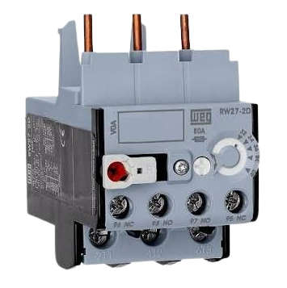

Relé térmico
O que é um Relé Térmico?
O relé térmico, também chamado de relé de sobrecarga ou bimetálico, é um protetor essencial em instalações industriais e de comandos elétricos. Sua principal função é proteger os motores elétricos contra o superaquecimento, evitando que sofram danos graves ou cheguem a queimar.
Quando um motor elétrico enfrenta um esforço acima do suportado ,por exemplo, quando trava o eixo ou precisa puxar mais peso do que o normal, ele começa a puxar mais corrente elétrica da rede. Essa corrente excessiva aquece os fios internos e pode derreter o isolamento das bobinas, provocando um curto-circuito. É exatamente aí que o relé térmico entra como um "escudo de proteção".
Como o relé funciona?
✦Lâminas Bimetálicas: Internamente, o relé conta com tiras compostas por dois metais diferentes colados lado a lado.
✦Dilatação por Calor: Como cada metal se expande em uma taxa diferente ao esquentar, a passagem de uma corrente elétrica muito alta (que gera calor) faz com que a lâmina se dobre ou curve.
✦Desarme de Segurança: Ao se curvar além de um limite seguro, essa lâmina aciona um mecanismo interno que abre os contatos auxiliares do relé, cortando imediatamente a alimentação do circuito de comando e desligando o motor antes que ele estrague.
✦Trava e Rearme Manual: Após desarmar por sobrecarga, o relé não deixa o motor religar sozinho imediatamente. Ele fica travado até que a lâmina esfrie e uma pessoa faça o rearme manual (apertando o botão no próprio relé) após identificar e resolver a causa do problema.
Principais Recursos e Características
Além de desligar o motor em emergências, o relé térmico conta com facilidades operacionais:✦Ajuste de Corrente (Disco de Regulagem): Possui um seletor giratório no qual o eletricista ajusta a corrente exata de trabalho do motor (baseado na placa do motor).
✦Contatos Auxiliares (NA e NF):
⋆ 95-96 (NF - Normalmente Fechado): Usado no circuito de comando para desligar o contator quando ocorre a sobrecarga.
⋆97-98 (NA - Normalmente Aberto): Usado para acionar um alarme, lâmpada de sinalização ou aviso sonoro alertando que o motor travou.
✦Botão de Teste: Permite simular a atuação do relé para conferir se o painel e os sinais de alerta estão respondendo corretamente.
✦Conexão Direta: Possui pinos rígidos na parte superior projetados para serem acoplados diretamente às saídas de força de um contator.
Aplicações Práticas
O relé térmico é indispensável em praticamente qualquer painel de comando que acione motores elétricos, tais como:✦Bombas d'água e de processos.
✦Compressores de ar e sistemas de refrigeração.
✦Esteiras transportadoras e misturadores industriais.
✦Pontes rolantes, exaustores e ventiladores industriais.
